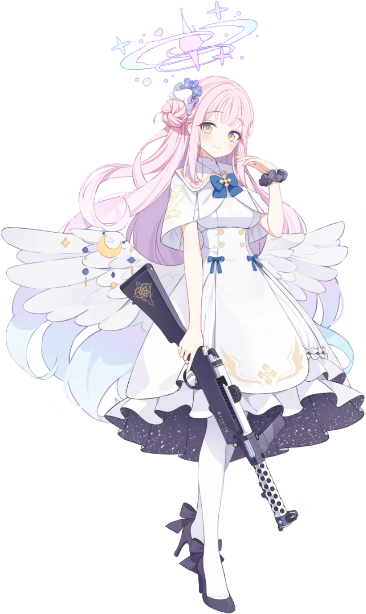
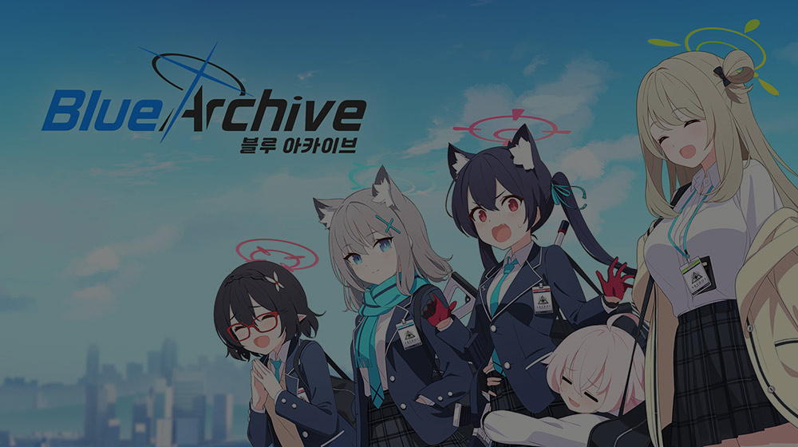

PERSONAL FILE✦ J–001
EARL JAMES · JUST CALL ME JAMM
Hi, I’m Earl James.
Call me Jamm✦
I play games, watch movies, and joke around.
You can call me EJ, but I’d rather go by Jamm.
Here’s a bit about me.
Yes, this whole website is Mika themed.

✦ IS THAT MY GIRLFRIEND? Let me dream, okay?
♡
MY FAVOURITE CHARACTERIt had to be Mika.
01 / SELF INTRODUCTION
A little more
about me.
A quick introduction.
My name’s Earl James. EJ is fine, but honestly, I prefer Jamm. Being called by my first name just feels a bit odd.
I like playing games and watching movies when I have time. I’m also a bit of a joker, so I’ll probably try to make you laugh.
I don’t have as many awards as the friend who helped me make this website, but I do know a lot of random fun facts. I also like going outside and trying things I haven’t done before.
RANDOM FACT ABOUT ME
I’d rather be called Jamm than Earl James.
02 / HOBBIES
A bit of everything.
I don’t really have one main hobby.
I just like trying different things.
I love nature and calm places.
— JAMM
A bit of peace and happiness is enough for me.
03 / FAVOURITE GAME
One of
my favourite games.

JAMM’S FAVOURITESBlue
Archive✦ONE OF MY FAVOURITE GACHA GAMES
GAME / 001Archive✦ONE OF MY FAVOURITE GACHA GAMES
Yep, it’s
Blue Archive.
Blue Archive is one of my favourite gacha games. I wanted the website to be based on it, especially Mika.
The pink probably makes a bit more sense now.
✧
I like the game.
I like Mika even more.
04 / FAVOURITE CHARACTER
Mika. Obviously.
聖園ミカMisono MikaBLUE ARCHIVE
MY FAVOURITE CHARACTERMy “gorilla
My “gorilla
princess.”
This is Mika from Blue Archive, my favourite character. I call her my “gorilla princess.”
I joke that I already have a girlfriend. Her name’s Mika.
Yes, I know she’s fictional. It’s okay to daydream, right?
THAT’S PRETTY MUCH IT
I really like Mika.
You’ve probably noticed.